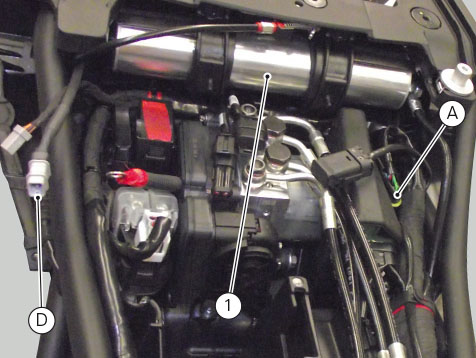
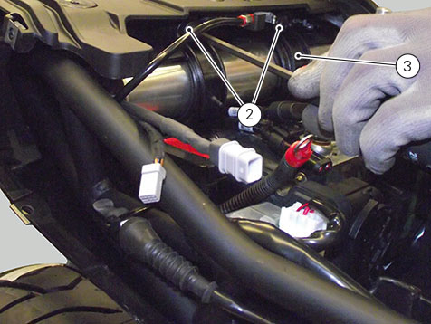
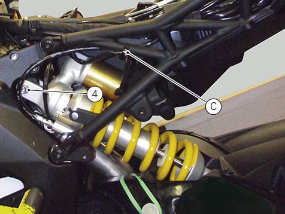
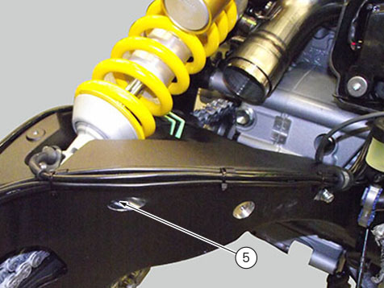

Removing the rear shock absorber
Remove the rear left side body panel (
Removing the side body panels and tail guard
).
Remove the rear mudguard (
Removing the rear mudguard
).
Remove the silencer (
Removing the silencer
).
Remove the rear wheel (
Removing the rear wheel
).
Remove the rider seat (
Removing the seat
).
Disconnect shock absorber connector (A) from main wiring harness and connector (D) of rear shock preload actuator (1) from main wiring harness.

Undo the screws (2) securing the bracket (3), and then remove the expansion reservoir (1) from its seat.

Remove the tie (C) and release the cable.
To remove the rear shock absorber from the motorcycle, loosen the top screw (4) and the bottom screw (5).

